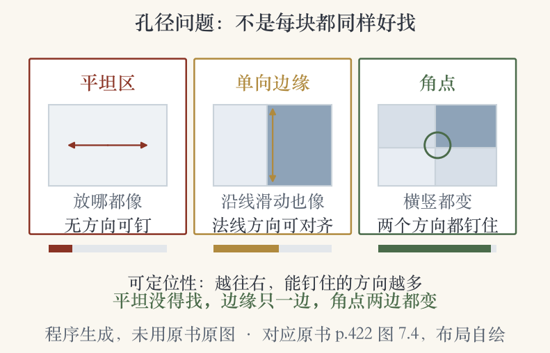
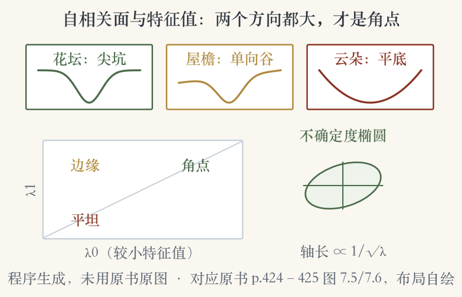
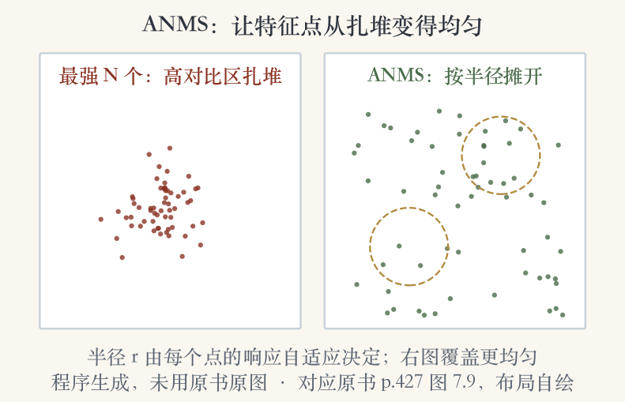

第 7 章 · 角点检测 · 教材 p.422
什么样的位置最好找
没有纹理的区域，几乎无法定位。
只有一条边，沿边方向说不清。
至少两个方向都有梯度，才是角点。
实验图三块小块：1 块好找，2 块难找。
依据：原书第 422 页；本集实验

孔径问题三例：平坦区 / 单向边缘 / 角点｜程序生成，未用教材或论文原图
正课第五十八集
01 / 16
角点检测 · 加权平方差
把好找写成加权平方差
对应小块逐像素相减、平方、加权求和。
位移向量 u 让一块相对另一块移动。
窗口权重 w 可以中心高，也可以均匀。
和第 9 章估计整幅图运动是同一个式子。
依据：原书第 422 页
式子的三样东西
u：位移向量
w：窗口权重
求和：覆盖 patch 全部像素
正课第五十八集
02 / 16
角点检测 · 自相关面
不看对手，只看自己挪一点
特征检测不知道以后会匹配哪张图。
只能把图块自己平移，看误差怎么变。
这个误差面叫自相关函数或自相关面。
误差上升越快，位置越容易被钉住。
依据：原书第 423–424 页
自相关面看什么
只看自身平移，不用另一张图
某方向误差不变：该方向说不清
面越尖，定位越准
正课第五十八集
03 / 16
角点检测 · 三个例子
花坛尖坑，屋檐单向谷
花坛纹理丰富，自相关面有强极小。
屋檐边缘沿一个方向一直很平。
云朵没有稳定极小，几乎没法定位。
三种面对应角点、边缘、平坦区。
依据：原书第 424 页
三种面
花坛：强极小
屋檐：单向歧义
云朵：无稳定极小
正课第五十八集
04 / 16
角点检测 · 结构张量
泰勒展开只剩一个矩阵
一阶泰勒展开，自相关面近似成二次型。
位移向量左右各乘一次矩阵 A。
A 由梯度外积在窗口内加权卷积得到。
经典 Harris 用五点差分，现代用高斯导数。
依据：原书第 424 页
E(Δu) ≈ Δuᵀ A Δu
A = w ∗ [Ix² IxIy; IxIy Iy²]；梯度尺度通常取 1
正课第五十八集
05 / 16
角点检测 · 特征值
两个特征值，两个方向
A 的两个特征值是 λ0、λ1。
A 的逆给出匹配位置不确定度的下界。
特征值越大，位置越确定。
不确定度椭圆轴长正比于 λ 的负二分之一次方。
依据：原书第 425 页；本集实验

自相关面与特征值：花坛尖坑 / 屋檐单向谷 / 云朵平底，加四象限与不确定度椭圆｜程序生成，未用教材或论文原图
正课第五十八集
06 / 16
角点检测 · Shi-Tomasi
Shi-Tomasi 只看小特征值
最大不确定度由较小的特征值决定。
Shi 与 Tomasi 在 1994 年找小特征值的局部极大。
响应函数就是较小的那个特征值。
两小是平坦，一大一小是边缘，两大是角点。
依据：原书第 425 页
四象限
λ0 小、λ1 小：平坦
一大一小：边缘
两个都大：角点
正课第五十八集
07 / 16
角点检测 · Harris
Harris：行列式减 α 乘迹方
Harris 与 Stephens 在 1988 年给出这个量。
响应等于行列式减 α 乘迹的平方。
α 通常取 0.06，不需要开平方。
旋转不变，并且压低边缘特征。
依据：原书第 425 页
R = det(A) − α·tr(A)²
α = 0.06；不用开方；旋转不变；压低边缘
正课第五十八集
08 / 16
角点检测 · 其他测度
两种替代测度
Triggs：λ0 减 αλ1，α 取 0.05。
目的：压低一维边缘。
Brown 等用调和平均，特征值接近时更平滑。
二阶 Hessian 还能推广到参数运动。
依据：原书第 426 页
共同目标
两个特征值都大
配方不同，目标一致
混叠会抬高小特征值
正课第五十八集
09 / 16
角点检测 · 响应等值线
等值线比较响应函数
图 7.7 把常用检测函数的等值线画在一起。
它们都在找两个特征值都大的位置。
只是混合方式不同。
看等值线就知道哪些区域会被判成角点。
依据：原书第 426 页
图 7.7 看什么
横轴 λ0，纵轴 λ1
右上角才是角点
单一方向的大梯度不算
正课第五十八集
10 / 16
角点检测 · Harris 与 DoG
Harris 与 DoG 各盯一类
图 7.8 对比 Harris 响应和 DoG 响应。
圆圈大小和颜色表示检测尺度。
两种检测子倾向于在互补位置响应。
一个盯角点，一个盯斑块。
依据：原书第 427 页
两种响应
Harris：角点
DoG：斑块
尺度空间接 DoG 这条线
正课第五十八集
11 / 16
角点检测 · ANMS
ANMS：强，也要周围没人更强
大多数检测子只找局部极大。
结果特征点在高对比区域扎堆。
ANMS 要求比半径 r 内邻居强 10%。
先按响应排序，再按抑制半径建表。
依据：原书第 426–427 页
三步
找局部极大
按响应强弱排序
按半径 r 自适应筛选
正课第五十八集
12 / 16
角点检测 · ANMS 效果
从扎堆到摊开
图 7.9 对比最强 250 个、500 个点。
ANMS 选出的点分布更均匀。
实验两栏各 60 个点做最小演示。
强点扎堆，跟踪时会挤在同一块。
依据：原书第 427 页；本集实验

ANMS 前后：最强点扎堆 vs 按半径摊开｜程序生成，未用教材或论文原图
正课第五十八集
13 / 16
角点检测 · MOPS
MOPS：五层金字塔的定向块
图 7.10 在五层金字塔上提取。
框的方向表示特征方向。
框内区域用来采样描述子。
到这儿，检测还只在单一尺度。
依据：原书第 428 页
MOPS
五层金字塔
框方向 = 特征方向
框内采样描述子
正课第五十八集
14 / 16
角点检测 · 重复率
怎么比检测子
Schmid 等在 2000 年首提重复率。
重复率：变换后 1.5 像素内重现的频率。
信息量：旋转不变描述子的熵。
高斯导数 Harris，σd=1、σi=2 效果最好。
依据：原书第 428 页
两个指标
重复率：找得回
信息量：值不值得描述
改进的高斯导数 Harris 最好
正课第五十八集
15 / 16
收束 · 下一集
两个特征值都大，才是角点
孔径问题 → 加权平方差 → 结构张量 A。
两个特征值 → Harris 与 Shi-Tomasi。
ANMS 让特征点分布更均匀。
下一集：尺度空间与 SIFT。
依据：原书第 422–428 页
三句话
平坦没得找
边缘只一边
角点两边都变
正课第五十八集
16 / 16